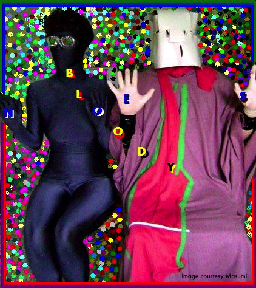
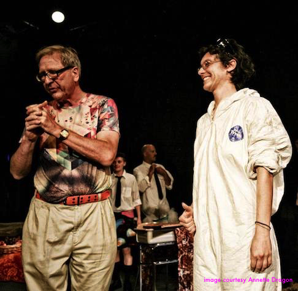

//\\//\\ What Quality is a Perf or Perfy? ///\\\
///\\ activity on a sort of stage ///\\//// a number of act-ers \\\\\\//// body without dance /////\////\\\ sound without music \\\\///\\\ drama without reason ////\\// mood without person //\\\\\\\// spectacle without motive \\\/////// live in time /////\\\//\\\\ watched or not \\\\////
///\\\ "something will happen" ///\\///
Bloody Noes Bloody Noes since 2010 is a duo of MC Drywall & DJ Cardboard who attempt precise combinations of sound - object - activity & pageantry - video - audio + accident &&& (hhh) | John W. Borek Productions John Borek, patron saint of the radical artist and then-director of development at MUCCC Theater, generously extended us awesome opportunities of scale and possibility, thank you for having faith John Borek <3 |
backdrop images from 2007 Pure Kona performance, courtesy of Marie Starr \\\\////